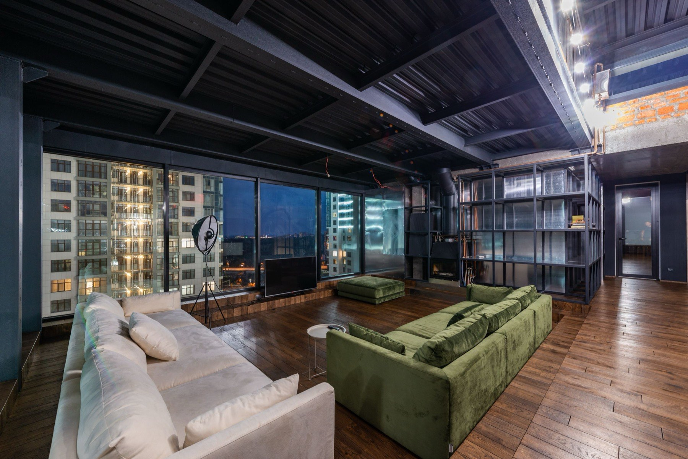
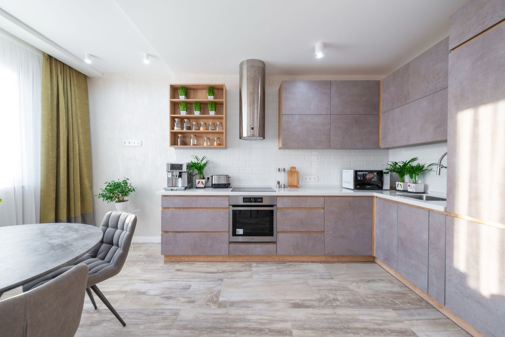
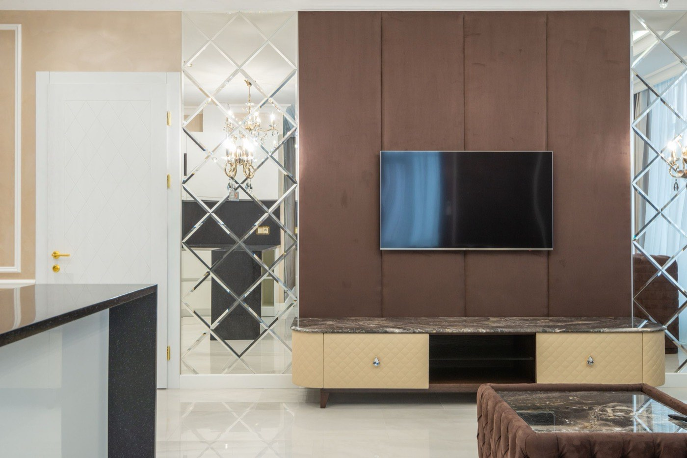
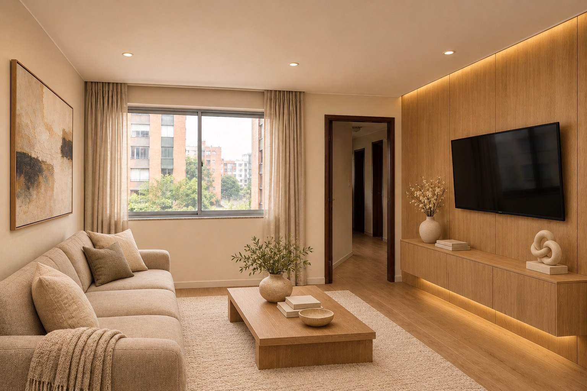

Estructurar las ofertas
Crearé el catálogo comercial por línea: muebles para TV, mobiliario a medida, cocinas, baños y remodelaciones de casas y mansiones. Definiré públicos, alcances, paquetes y argumentos de venta.

Mi aporte: ofertas, contenido y campañas con IA, prospección, web, CRM, agentes de chat y voz, cotizaciones interactivas y medición de ventas.
Ver mi aporte completoMi aporte: construir y operar el ecosistema comercial y tecnológico.

Web visual, propuestas interactivas
y una visita que acerca el cierre.

Asumiré la estrategia, la implementación y la operación de estos ocho frentes. Cada uno tendrá entregables y un proceso de trabajo.
Crearé el catálogo comercial por línea: muebles para TV, mobiliario a medida, cocinas, baños y remodelaciones de casas y mansiones. Definiré públicos, alcances, paquetes y argumentos de venta.
Produciré videos, anuncios y piezas con IA y material real. Pondré a prueba las propuestas creativas y ajustaré las campañas según consultas, visitas y ventas cobradas.
Construiré una base de prospectos y aliados, prepararé acercamientos personalizados y gestionaré el seguimiento con propietarios, inmobiliarias, arquitectos, administradores e inversionistas.
Desarrollaré páginas por oferta y el recorrido de foto → tres alternativas con IA → antes y después → solicitud de visita. Conectaré cada consulta con el proceso comercial.
Organizaré los contactos, su necesidad, responsable, historial, etapa y próxima acción. Configuraré recordatorios y recuperación de cotizaciones pendientes para dar continuidad a cada oportunidad.
Conectaré agentes con información aprobada para responder dudas, calificar interesados, coordinar visitas y realizar llamadas autorizadas. Las consultas técnicas pasarán al responsable de la empresa.
Construiré propuestas visuales con antes y después, animaciones, materiales, alternativas y alcance. Los valores se incorporarán con precios aprobados después de la visita técnica.
Implementaré un tablero de oportunidades, visitas, cotizaciones, cierres, ingresos cobrados y margen. Revisaré resultados y activaremos nuevos espacios, referidos y oportunidades en clientes actuales.
Mi aporte incluye construir el sistema y operarlo. La empresa aporta el diseño y la ejecución técnica, la fabricación y la obra. Pauta, herramientas y equipo se presupuestan y asignan antes de activarlos.
Elige una propuesta y desliza el comparador. Así mostraremos al cliente el potencial de su espacio antes de coordinar la visita.

ANTESDESPUÉS · OPCIÓN 02Demostración con imágenes precargadas creadas con IA; no corresponde a una obra ejecutada. La generación desde fotos de clientes y la conexión con agenda y CRM se implementarán como parte del proyecto.
Cada línea tendrá su público, su presentación y su proceso de venta. Precio premium respaldado por diseño, ejecución y servicio.
Remodelaciones completas de apartamentos, casas y mansiones. Una experiencia privada para propietarios locales o en el exterior.
La inversión se define en la visita técnica.
Las imágenes con IA exploran posibilidades; el equipo valida el proyecto.
Empezamos por las ofertas y la capacidad real de entrega. Escalamos lo que demuestra ventas rentables.
Ofertas, márgenes, públicos, proceso de venta y responsables.
Web, contenido, prospección, agentes de chat y voz, y seguimiento.
Medir visitas, cierres, ingresos cobrados y margen. Mejorar y escalar.
Propongo entrar como socio con un 10% de participación en la empresa, aportando la estructuración, implementación y operación del ecosistema comercial y tecnológico.
Leer propuesta completaCrear, implementar y operar las ofertas, el contenido, las campañas, la prospección, la web, el CRM, los agentes de chat y voz, las cotizaciones y la medición comercial.
Diseño y validación técnica, mediciones, fabricación, personal y ejecución de obra, precios aprobados, capacidad de entrega y responsables de atención técnica.
Las condiciones de incorporación se acuerdan por escrito. Pauta, herramientas, consumo de IA y equipo se presupuestan y asignan antes de activarlos.